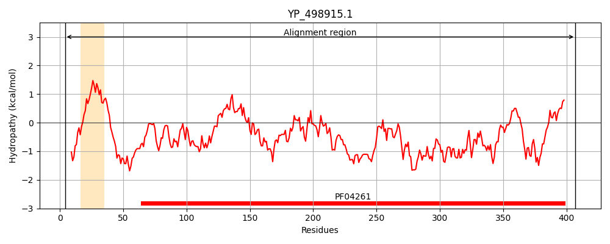

Hit Accession: P31545
Hit TCID: 2.A.108.2.3
Hit Description: gnl|BL_ORD_ID|9775 gnl|TC-DB|P31545|2.A.108.2.3 Peroxidase ycdB - Escherichia coli (strain K12).
Mach Len: 426
e:0.000000
Query TMS Count : 1
Hit TMS Count: 0
TMS-Overlap Score: 0.000000
Predicted Substrates:CHEBI:34754;iron(2+)
BLAST Alignment:
Score: 537 , Bit scores: 211 bits, E-value: 2.9e-64, Alignment length: 426, Percentage identity: 34
Query: 4 YEQVNDSTQFSRRTFLKMLGIGGAGVAIGASGVGSMWSFKSMFNT-PEDPEKDAYEFYGKVQPGITTPTQKTCNFVALDLKSKDRDAIKAMFKKWTVMADRMMDGDTVGKPSNNPLMPPVDTGESIG-LGASKLTITFGISKSLM-KKIGLSSKIPDAFKDLPHFPNDQLIDDYSDGDIMIQACSNDSQVSFHAVHNLVRPFRDIVKVRWAQSGFIS-----AKGKETPRNLMAFKDGTINPRKNNQ--LKDYVFI-----DDGWAKHGTYCVVRRIQIHIETWDRTALEEQEATFGRKRHSGAPLTGGKEFDEIDLKAKDSHGEYIIDKDAHTRLAK----EANTSI-LRRAFNYVDGTDDRTGNFETGLLFIAFQ-KATKQFIDIQNNLGSNDKLNEYITHRGSASFLVLPGVSKGG-YLGETL 407
Y+ N + SRR LK++G A G+ V +S T D + FYG+ Q GI TP Q VA D+ + D+ ++ +F+ T + G + + NP +PP+D+G G + LTIT + SL ++ GL+ ++P + + FPND L GD+++Q C+N HA+ ++++ D++ VRW + GFIS +KGKETP NL+ FKDGT NP N ++ V++ + W G+Y VR IQ +E WDRT L+EQ+ FGR + +GAPL E D D A D G+ +I D+H RLA E+ +S+ LRR ++Y G + +G + GLLF+ +Q K F+ +Q L + + L EY+ G F LPGV Y G L
Sbjct: 3 YKDENGVNEPSRRRLLKVIG---ALALAGSCPVAHAQKTQSAPGTLSPDARNEKQPFYGEHQAGILTPQQAAMMLVAFDVLASDKADLERLFRLLTQRFAFLTQGGAAPE-TPNPRLPPLDSGILGGYIAPDNLTITLSVGHSLFDERFGLAPQMPKKLQKMTRFPNDSLDAALCHGDVLLQICANTQDTVIHALRDIIKHTPDLLSVRWKREGFISDHAARSKGKETPINLLGFKDGTANPDSQNDKLMQKVVWVTADQQEPAWTIGGSYQAVRLIQFRVEFWDRTPLKEQQTIFGRDKQTGAPLGMQHEHDVPDY-ASDPEGK-VIALDSHIRLANPRTAESESSLMLRRGYSYSLGVTN-SGQLDMGLLFVCYQHDLEKGFLTVQKRL-NGEALEEYVKPIGGGYFFALPGVKDANDYFGSAL 420 | Protein Hydropathy Plots: |
|---|
|  | |
Pairwise Alignment-Hydropathy Plot:
|
|---|
|